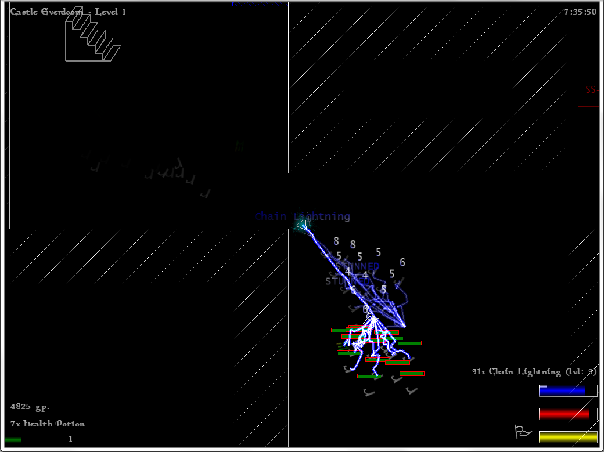

トップ
Roguelike Advent Calendar 2016 24日目 demon、triangle wizard紹介＋その他ちょっと紹介
Triangle Wizard紹介
作者:Wouter van den Wollenberg氏
公式サイト:http://trianglewizard.webs.com/
どんなゲーム？:リアルタイム非マス目ローグライク+stg。
リアルタイムで非マス目だけどプレイ感はローグライク。
アクションの腕よりも知識や戦術が重要かもしれない。
特徴:リアルタイム+非マス目なのにプレイ感はローグライク。
いつでもポーズ出来る、敵弾回避は困難。
魔法の習得やパワーアップは床に落ちていたり店で購入する。
キャラメイク
29種類の種族、43種類の職業、多すぎて数えるのも面倒な神から一つ選択してスタート。
種族はレベルアップで耐性が上がるdark elf、近接攻撃で魔法の使用回数が回復するspectre、
飛行で地形や敵の魔法を回避出来るfey、回復薬を飲むと変身するwerewolfなど
以外と妙なのは少ない。妙な設定なのはいるが
さまざまな職業。炎や氷の魔法使いから敵を支配するCerebremancer、強力な召喚魔法Call heroだけを持ってスタートするMarshall、
近接戦闘系のBerserkerや敵から魔法を盗むDweomer caster
地形操作魔法ばかりのDungeon master、ランダムに魔法が発動するChant of Discordを唯一使えるWild mageなど
まともな職業から変なもの、イメージ重視のものまで沢山ある。
神もやたら多い。まともなものから良くわからないものまで。
たまに神からクエストが課せられる事もある。
priest(神で名前が変わるが、treasure hunterとdungeon masterの間)だと恩恵が増え、
Argilだと壁に魔法を当てると爆発するようになったり、RNGに愛されたりする。
そして神官を殺して神罰を受けて死ぬ(無信仰かazmodan信仰なら防げる、
全ての神に仕えるServant of the pantheonなら神の怒りが長く続くことはない)
難易度は高そう、未クリア
魔法システム
ダンジョンには様々な魔法が落ちていて、それを拾う事により使用回数、魔法レベル、自然回復上限、使用回数自然回復速度が上昇する。
魔法レベルが高いほど出やすくなり、一つの魔法だけ上げたり、幅広い種類の魔法で戦ったり出来る。
自然回復が0の魔法は高レベルとして扱われるため、使用頻度の少ない魔法ならあえて自然回復を上げないという選択も出来る。
アクション要素:
狙い撃ちは必要(Chain lightningや召喚を使うならいらない)。狙わないと当たらない。
@の移動速度が遅い癖に弾が大きくて速く、避けるのはかなり厳しい。
さらに位置指定攻撃や誘導弾(当たり前のように速かったりする)などが横行している。
移動速度で振り切るか、防御魔法で凌ぐか、気合でなんとかすることになる。
さらに硬くて速い敵が強引に体当たりしてきたりするので、魔法をうまく使わないと生き残るのは難しい。
おまけにUIと操作性がかなり劣悪、デフォルト設定だと腕が三本必要かもしれない
設定ファイルはglobal_settings.tri。難易度設定なども出来る
操作方法
F1でヘルプ。
左クリックで魔法の詠唱、右クリックで武器攻撃。
shiftでダッシュ、altでアイテムやパワーアップを拾う、shrineを調べる
F2でポーズ、spaceでジャンプ、eで回復薬を飲む。
12345などに魔法のショートカットを割り当てて魔法変更
F3で魔法検索、insertで魔法リスト、homeでマップ、page upでアイテム使用。
qで明かり、backspaceで店を見る。
魔法一覧画面が改悪されて読めないのでとりあえず右下の説明だけ書いておく
Use arrow keys to navigate
SPACEBAR:Description
Ctrl+number:Assign hotkey
Ctrl+letter:Assign instant cast
Delete(ally):Toggle allowance of spell cast
PageUP(ally):Disallow all but this spell
End:Forbid Spell for all allies
F5:Cast on new level enter
F6:Auto-refresh on self(enable globally outside spellbook first)
F7:Auto-refresh on allies(enable globally outside spellbook first)
F8:Auto-refresh on enemies(enable globally outside spellbook first)
F10:Set as Prismatic Sphere load
F11:Set as Watcher load
Backspace(in shop):Shop for this spell
F12:Switch spell ordering
shrine
調べるとshrineの種類によって何か起こる、ものによっては酷いことになったりすごいことになるかもしれない！
分岐
階段を降りた時、分岐に行くか聞かれる。
大体分岐のほうが難しいが報酬が多い……かも知れない。
タレント
階段を降りた時たまに三つのタレントから一つ選ぶ事が出来る。
様々な効果があるが、実用的なものを引けるかはやっぱりランダム。
sigil
たまにダンジョンに設置されている。
sigilと同じ属性の魔法を当てると開放出来る。
魔法のレベルやサークルが足りないと開放出来ないこともある。
アイテムや敵が入っている。
ランダムユニーク。
このゲームはランダムユニークがよく出てくる。
平気で凶悪な魔法や高速高耐久だったりするのでかなり死ねる。

すごくちょっとしたアドバイス？
狙い撃ちしなくていいchain lightningを使えるEnergistや、勝手に戦ってくれる召喚系の職業が多分楽。
種族は飛行(ほぼ全ての投射系魔法を回避出来る)+耐性貫通持ちのfeyと、HPが最も高いstitched oneがお勧めかもしれない